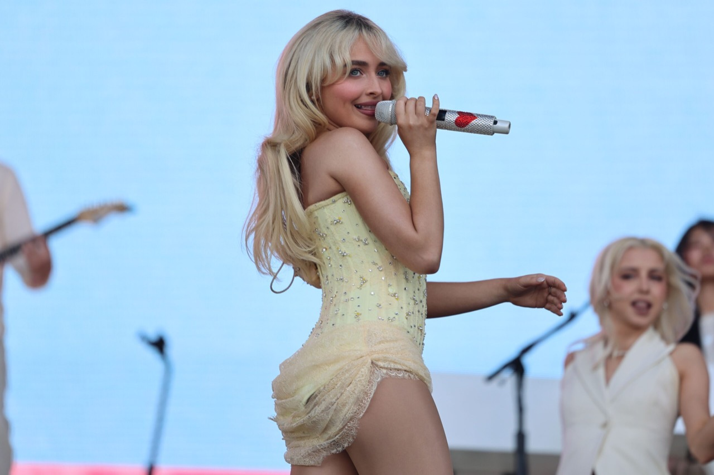
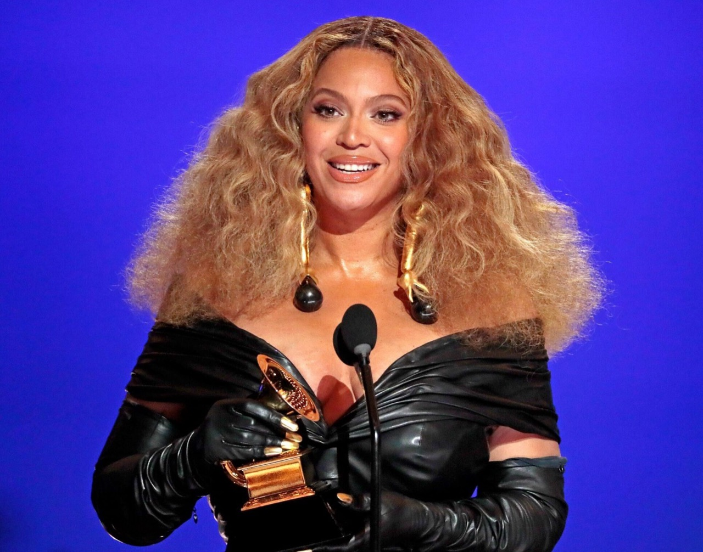

The subject titled "Youtube Cover Musician Creates a Heavy Metal Ballad Version of “Friends”..." represents important contemporary work addressing significant cultural themes through music medium and perspective. This exploration examines the creator's vision, methodology, cultural impact, inspiration sources, and discovery processes.
UNDERSTANDING THE CREATOR AND BACKGROUND
Creators achieving prominence in music fields bring extensive preparation, genuine passion for their subjects, and years of dedicated practice developing expertise and distinctive approaches. The creator of "Youtube Cover Musician Creates a Heavy Metal Ballad Version of “Friends”..." demonstrates hallmarks of serious professional practice—comprehensive training combining technical and conceptual development, sustained engagement with subject matter and field, and commitment to exploring themes of personal and cultural significance.
Professional development in music requires sustained commitment transcending mere technical skill. It demands engagement with field traditions, study of contemporary practice, experimentation with innovations, and continuous refinement of conceptual vision. This artist has invested substantial time developing facility with chosen approaches, understanding fundamental principles, and developing distinctive approach reflecting personal philosophy.
The decision to create "Youtube Cover Musician Creates a Heavy Metal Ballad Version of “Friends”..." reflects deliberate choice to pursue authentic expression rather than merely commercial directions. Such commitment to genuine creative expression, when potentially limiting immediate commercial success, demonstrates values distinguishing serious practitioners from purely commercial work.
METHODOLOGY AND TECHNICAL APPROACH
The execution evident in "Youtube Cover Musician Creates a Heavy Metal Ballad Version of “Friends”..." demonstrates sophisticated understanding of particular medium and application of fundamental principles governing communication. Every methodological decision—choice of approach, application techniques, strategic focus, thematic emphasis—communicates meaning and generates significant responses.
Developing true expertise requires extensive engagement with chosen field. This extended practice enables practitioners to understand intuitively how their approach responds to intentional direction, how particular techniques achieve desired effects, and how to resolve challenges inevitably arising during creation. The apparent effectiveness of accomplished work often masks considerable sophistication developed through years of dedicated practice.
CULTURAL SIGNIFICANCE AND IMPACT
The cultural significance of "Youtube Cover Musician Creates a Heavy Metal Ballad Version of “Friends”..." extends beyond immediate achievement to address broader cultural conversations of genuine importance. Contemporary work increasingly engages with themes of real cultural importance—human relationships, social concerns, environmental issues, technological change, historical consciousness. This work participates in such meaningful engagement.
The work achieves cultural resonance by combining technical excellence with genuine engagement with themes mattering to contemporary audiences. In moments marked by commercial saturation, work demonstrating authentic vision and genuine skill possesses particular value. Viewers seek cultural products offering authentic expression rather than merely commercial entertainment. The appreciation of "Youtube Cover Musician Creates a Heavy Metal Ballad Version of “Friends”..." reflects audience hunger for genuine work addressing meaningful themes with both technical mastery and emotional authenticity.
INSPIRATION AND CREATIVE SOURCES
Sources of inspiration shaping "Youtube Cover Musician Creates a Heavy Metal Ballad Version of “Friends”..." emerge from combination of personal experience, engagement with cultural traditions, conceptual interests, and emotional responses to particular subjects. Creators consistently report their most meaningful work emerges from genuine personal engagement rather than abstract commercial choices. The authenticity evident in "Youtube Cover Musician Creates a Heavy Metal Ballad Version of “Friends”..." suggests authentic creative vision rather than trend-following.

Inspiration typically includes direct observation, engagement with field traditions addressing similar themes, interaction with creative communities, and internal psychological concerns the creator seeks to explore. This combination enables creation of work feeling personally authentic while addressing broader concerns—addressing themes mattering individually while also resonating with broader audiences.
DISCOVERY AND PROFESSIONAL TRAJECTORY
Contemporary pathways for recognition have transformed significantly with digital platforms emergence. "Youtube Cover Musician Creates a Heavy Metal Ballad Version of “Friends”..." likely achieved visibility through combination of genuine merit, emotional resonance, and effective platform utilization. The work's success validates audience appetite for genuine work demonstrating excellence and authentic vision.
Professional opportunities emerging from prominence—exhibitions, features, collaborations—often follow audience building through digital platforms. Many contemporary creators achieve institutional recognition only after establishing audiences demonstrating cultural relevance through digital success.
TECHNICAL EXCELLENCE AND MASTERY
The sophistication evident in "Youtube Cover Musician Creates a Heavy Metal Ballad Version of “Friends”..." demonstrates considerable expertise achievement. Whether employing various approaches, the creator demonstrates facility with chosen methods, understanding of fundamental principles, and ability to execute complex ideas with precision and effectiveness. This expertise, combined with conceptual sophistication and authentic vision, enables creation of work achieving aesthetic excellence and meaningful communication.
Technical excellence should not be confused with mere technical display. Rather, genuine expertise involves subordination of technical skill to intentional vision—using technical knowledge to effectively communicate vision and achieve intended effects. Accomplished work demonstrates such integration. "Youtube Cover Musician Creates a Heavy Metal Ballad Version of “Friends”..." exemplifies this integration, demonstrating technical excellence deployed in service of artistic vision.

EMOTIONAL CONNECTION AND RESONANCE
The most significant measure of success lies in emotional resonance and genuine connection between creator's vision and viewer experience. Work speaking authentically to audiences' emotional lives, engaging imagination, inviting contemplation, and communicating across boundaries constitutes genuine achievement regardless of approach or content.
Recognition of "Youtube Cover Musician Creates a Heavy Metal Ballad Version of “Friends”..." reflects understanding that genuine creative practice remains vital to human culture. Through technical excellence, conceptual sophistication, authentic vision, and emotional authenticity, creators produce work worthy of serious appreciation. This appreciation validates investment in artistic development and practice maintenance across careers.
CONCLUSION AND LASTING IMPORTANCE
"Youtube Cover Musician Creates a Heavy Metal Ballad Version of “Friends”..." represents genuine achievement combining technical excellence, conceptual sophistication, authentic vision, and emotional resonance. The creator's contribution to contemporary practice, demonstrated through this work, advances the field while providing viewers with significant, emotionally resonant work worthy of appreciation.
Recognition of "Youtube Cover Musician Creates a Heavy Metal Ballad Version of “Friends”..." reflects broader cultural appreciation for serious practice addressing meaningful themes with mastery and authenticity. As contemporary culture evolves, work created with genuine commitment to excellence and authentic engagement with meaningful themes provides essential resources for human understanding, emotional connection, and cultural reflection.
SEO KEYWORDS: Youtube Cover Musician Creates a Heavy Metal Ballad Version of “Friends”..., music, contemporary work, professional practice, technical mastery, creative excellence, cultural significance, artistic achievement, visual communication, emotional resonance, creative vision, professional development, contemporary culture, artistic innovation, audience engagement